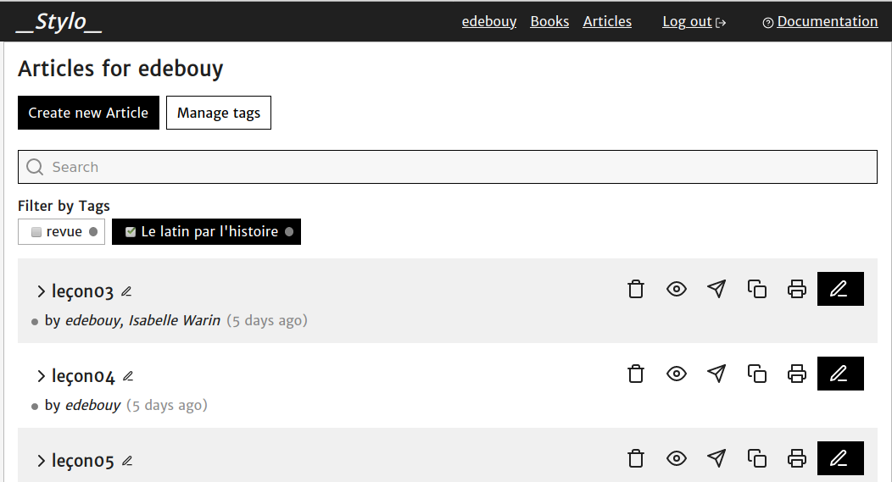
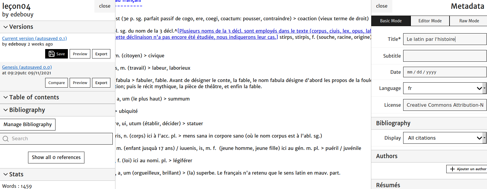
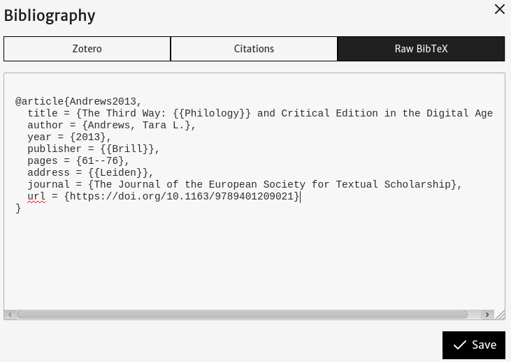
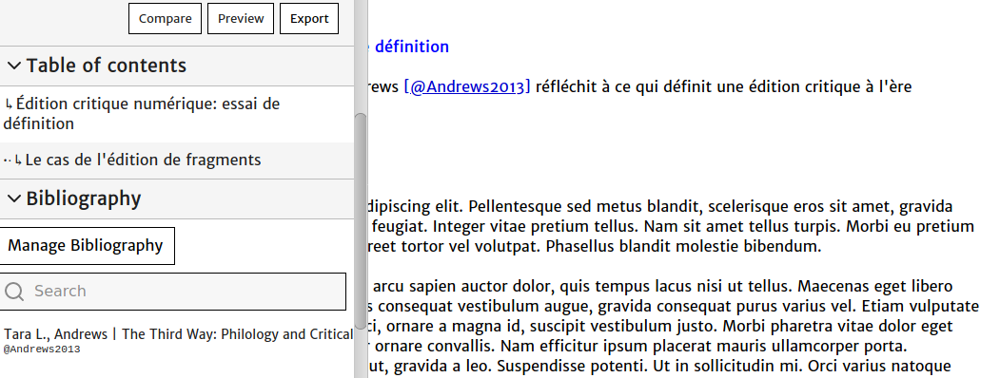
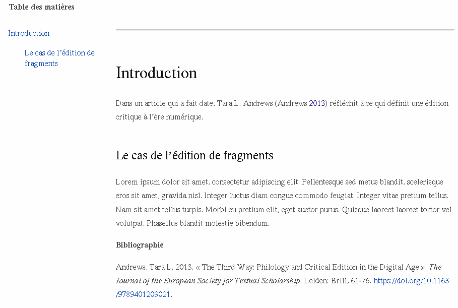
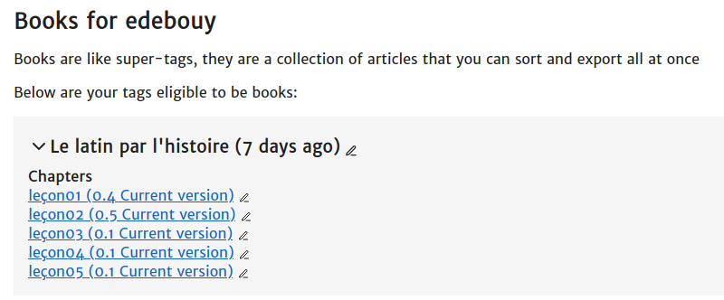
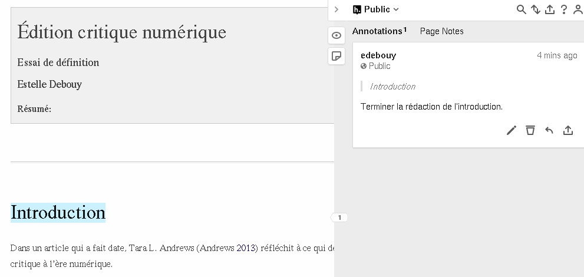

Stylo, un éditeur pour les sciences humaines et sociales
Table of Contents
- Abstract
- Introduction
- La « Stylo-sophie »Je reprends le terme employé dans la présentation de Stylo qui figure dans la documentation en ligne (https://web.archive.org/web/20220521023727/http://stylo-doc.ecrituresnumeriques.ca/fr_FR/#!index.md).
- Principes et fonctionnalités
- La saisie en Markdown
- Suivi de versions, table des matières et bibliographie
- La classe « Book »
- Annotations, import, export
- Partage de documents
- Documentation et support
- Exemples
- Conclusion
- Apports
- Limites
- Suggestions
- Bibliography
- Notes
Abstract
Stylo is an open source online text editor designed to allow researchers in the humanities and social sciences to write their scientific papers in a straightforward way while retaining full control over format and encoding. The source-text, encoded in Markdown, can then be converted by Pandoc into a variety of formats. The documents can also be viewed online through a permanent URL. Finally, Stylo features document sharing functions that make collaborative editing easier. Stylo is undoubtedly an interesting and innovative tool in the field of collaborative publishing.
Introduction
L’éditeur Stylo, libre et gratuit sous licence GPL-3.01, est développé par la Chaire de Recherche du Canada sur les écritures numériques (CRC-EN) avec le support d’Érudit2 et de la Très Grande Infrastructure de Recherche (TGIR) Huma-Num3. Il est hébergé par la TGIR Huma-Num depuis le 1ᵉʳ octobre 2020 (Équipe de rédaction d’Huma-Num 2020). Connecté à HumanID4, Stylo est accessible à tous les utilisateurs possédant un compte chez Huma-Num. Le code source est disponible sur Github5. Ce projet est encore un prototype en cours de développement.
Stylo est un éditeur de texte en ligne conçu spécifiquement pour les sciences humaines et sociales. Il doit permettre de rédiger tout type de textes scientifiques (articles, monographies, thèses, mémoires, ouvrages collectifs, et théoriquement éditions critiques). Visant à combiner les bonnes pratiques de l’édition scientifique et celles de l’édition web, il repose sur :
- le langage Markdown pour la saisie du texte ;
- YAML pour l’enregistrement des métadonnées ;
- BibTeX pour les références bibliographiques ;
- la chaîne de conversion Pandoc6 et XSLT pour les exports dans dix formats différents.
La « Stylo-sophie »Je reprends le terme employé dans la présentation de Stylo qui figure dans la documentation en ligne (https://web.archive.org/web/20220521023727/http://stylo-doc.ecrituresnumeriques.ca/fr_FR/#!index.md).
Contexte
Le responsable du projet, Marcello Vitali-Rosati (Vitali-Rosati 2015), est parti d’un constat :
il déplore l’absence de solution adaptée aux besoins de l’écriture savante. Les
outils existants présentent des limites qui doivent être dépassées ou reposent sur
des principes soulevant un certain nombre de problèmes : ainsi, les traitements de
texte entretiennent une confusion entre le contenu et la forme et ne permettent
pas de structuration scientifique8 ; LaTeX est un langage qui peut être perçu comme
complexe par des chercheurs en sciences humaines ; l’encodage en XML a
l’inconvénient d’être très lourd ; quant à « Google Docs », il s’agit
d’un cloud propriétaire qui ne garantit pas le respect de la vie privée.
Objectif
Le projet Stylo est né de la volonté de donner aux auteurs la maîtrise de leurs données scientifiques et de l’ensemble de la chaîne éditoriale. Il faut cependant rappeler que cela comprend au sens propre la suite d’opérations par lesquelles un texte rédigé par un auteur est transformé en un texte publiable et publié. À la différence de LaTeX, Stylo ne permet pas de prendre en charge toutes ces étapes. Son grand intérêt est de permettre aux auteurs de saisir facilement leur texte dans un éditeur de texte. Ils en deviennent donc à la fois les auteurs et les encodeurs. L’encodage, qu’il soit sémantique ou de structure, s’ajoute à leur propriété intellectuelle tandis que les traitements de texte leur imposent de façon opaque leurs propres formats. La position de principe à l’origine de la conception de Stylo est donc excellente. Il est cependant illusoire de viser la maîtrise de toute la chaîne éditoriale : que le texte soit publié sous la forme d’un article dans une revue ou d’un livre, la réalisation et la diffusion nécessitent l’intervention de nombreux professionnels spécialisés (typographe, maquettiste, diffuseur, etc.) Et le fait que l’article ou le livre soit imprimé ou en ligne ne change rien à cela.
Pour M. Vitali-Rosati (Vitali-Rosati et al. 2020), cette idée selon laquelle écrire c’est non seulement écrire mais aussi structurer, relève d’une « culture de l’éditorialisation9 en tant que processus de production de l’espace numérique ». Les concepteurs de Stylo ont souhaité construire un outil open source capable de garantir la bonne structuration des textes, et donc leur pérennité, leur indexation efficace, etc., sans demander aux chercheurs de développer des compétences informatiques trop complexes (Sauret 2018).
L’éditeur Stylo doit donc répondre aux exigences suivantes (Vitali-Rosati 2018a) :
- Être sémantique (Kembellec 2019, 7) : l’approche WYSIWYM (What You See Is What You Mean) qui a été adoptée, contrairement à l’approche WYSIWYG (What You See Is What You Get) qui est celle des traitements de texte, encourage la structuration logique avant le rendu graphique.
- Être facile à utiliser : partant du constat que nombre de chercheurs ne souhaitent pas consacrer du temps à maîtriser de nouveaux outils, M. Vitali-Rosati et son équipe ont choisi Markdown afin de ne pas interrompre la pensée par l’insertion de balises complexes. Ce langage présente en effet l’avantage de reposer sur une syntaxe simple et intuitive conçue pour être aussi facile à écrire et à lire que possible.
« low-tech » : l’utilisation de standards et de
technologies simples et pérennes est, pour les concepteurs de l’éditeur, la
condition nécessaire à une maintenance aisée. Cette approche garantit aussi
l’interopérabilité avec d’autres environnements et l’indépendance des utilisateurs
vis-à-vis d’un logiciel ou d’un format.
Principes et fonctionnalités
 
La saisie en Markdown
Les concepteurs de Stylo ont fait le choix d’un langage de balisage
simplifié qui a le mérite de rendre accessible facilement une structuration
rigoureuse du texte. L’auteur peut ainsi indiquer quels seront les différents
éléments du texte : niveaux de titre du document, citations, notes, figures,
tableaux, etc. Stylo, basé sur Pandoc, utilise une variante de Markdown, décrite dans
la documentation de Pandoc comme « Pandoc’s Markdown »
11, qui inclut des
fonctionnalités exclusives comme le traitement des citations notamment. Pour insérer
une note de bas de page il est possible de saisir un code comme dans l'exemple 1.
Les concepteurs de Stylo considèrent que l’auteur doit aussi pouvoir
enrichir sémantiquement un terme ou une phrase (voir supra). Bien que Markdown ne
permette pas de balisage sémantique, le choix de Pandoc comme convertisseur rend
possible l’insertion d’annotations sémantiques : l’auteur doit alors utiliser le
sélecteur de classe {.classe} où classe peut correspondre à
« definition », « description », « exemple », « concept », « these »,
« question », « epigraphe », « dedicace », « credits » et « source ». Il
faut cependant mentionner ici que les sélecteurs de classe, qui relèvent de la
structuration, n’ont pas de traduction sémantique dans le code : en utilisant la
classe « definition » par exemple, on obtient bien dans le fichier HTML
<span class="definition"> … </span> mais cela reste un
attribut de classe défini dans une feuille de styles ; et dans le fichier TEI, qui
donnerait pourtant l’occasion d’une traduction sémantique, on ne retrouve que des
paragraphes (<p> ... </p>) alors qu’on aurait pu s’attendre
à l’insertion d’un attribut sémantique. Par exemple : <span
type="definition"> … </span>.
C’est grâce à ce système d’annotations sémantiques de mots que Stylo est
censé offrir la possibilité de mettre en page une édition critique. Rappelons que par
édition critique nous entendons ici l’édition d’un texte ancien transmis par la
tradition manuscrite. Elle comprend la liste des témoins, des sources, des leçons et
variantes présentés dans l’apparat critique, et éventuellement une traduction et un
commentaire. Si on prend l’exemple le plus simple décrit par les Guidelines for
Electronic Text Encoding and Interchange de la TEI12, les
mots sont annotés à l’aide des trois éléments courants : app pour l’unité d’apparat
critique, lem pour le texte retenu par l’éditeur, et rdg pour les
variantes ou conjectures rejetées par l’éditeur. Il faut préciser que ces éléments
sont hiérarchisés : lem et rdg se trouvent toujours à l’intérieur de l’élément app et
jamais ailleurs (voir exemple de code 2).
Que faut-il donc écrire dans Stylo étant entendu que la syntaxe est
[texte]{.classe} et que l’on peut inventer les classes dont on a
besoin ? On peut imaginer l'apparat critique suivant saisi en Markdown (exemple de code 3). On obtiendra
alors le code HTML présenté dans l'exemple de code 4. Et quel code HTML sera alors produit ?
Plusieurs remarques s’imposent : Comment présenter les témoins et les sources ? Si le HTML est utilisé pour la visualisation, il n’est pas fait pour supporter ces informations. Il faudrait que le code soit plié pour permettre une lecture aisée. C’est une question d’ergonomie qui se révèle importante si l’édition est complexe. On constate donc qu’à mesure que l’édition gagne en complexité, on s’éloigne de la logique de Markdown prônant un code léger.
Il faudrait que l’éditeur ajoute à la feuille de styles conçue par
défaut la définition de nouveaux styles de manière à déterminer ce qui s’affiche ou
non : par exemple, les variantes pourraient s’afficher dans les marges, à condition
qu’elles soient peu nombreuses. Une solution consisterait à tout placer en note, par
exemple dans <span class="marginnote">, comme le font les
collègues du pôle Document numérique de Caen13.
Mais dans ce cas les différents éléments ne peuvent plus être identifiés par une
machine car, pour être sémantiques, les informations doivent être encodées comme des
éléments de données.
Suivi de versions, table des matières et bibliographie
  
-
Une rédaction en plusieurs étapes grâce au
« gestionnaire de versions ».Les articles sont automatiquement sauvegardés, mais il est possible d’enregistrer des versions mineures ou majeures. Le gestionnaire de versions offre aussi la possibilité de comparer les différentes versions du texte et de suivre les corrections. - Table des matières. Une table des matières est automatiquement générée à partir des titres de niveau 2, 3 et suivants, le titre de niveau 1 étant réservé au titre de l’article déclaré dans les métadonnées.
-
Bibliographie. Stylo permet de synchroniser son document à une
« collection »Zotero15. Il est aussi possible de saisir ou de récupérer les références au format BibTeX comme le montre la figure 3. - Une fois les références insérées dans le texte, les clés sont automatiquement remplacées par l’appel de citation et les références complètes sont produites à la fin de l’article comme on le voit sur les figures 4 et 5.
La classe « Book »
« Book », Stylo permet de créer des documents
plus complexes que des articles comme des mémoires ou des thèses. Les concepteurs
précisent toutefois que cette fonctionnalité est encore en cours de développement.
Elle repose sur l’utilisation de « tags » à poser sur tous les articles
qui constitueront le « Book ». Ils seront alors automatiquement chaînés
dans l’ordre alphabétique, comme on le voit dans l’exemple présenté dans la figure 6.
Annotations, import, export

Stylo a été conçu pour que l’auteur puisse saisir directement son texte en Markdown dans l’éditeur en ligne. Toutefois si le contenu destiné à être édité a préalablement été structuré avec le logiciel Microsoft Word, il est possible de l’importer en utilisant un convertisseur en ligne (du doc ou docx vers md).
L’un des atouts majeurs de cet éditeur est de proposer, à partir d’une seule saisie, de multiples formats de sortie. Ces exports sont de plusieurs types selon la diffusion visée :
- Des fichiers XML selon les schémas sélectionnés (Erudit, TEI, etc.)
- Des fichiers HTML pour publication directe sur des CMS (grâce à des API16).
- Des fichiers PDF stylés selon des modèles programmables.
L’export du mémoire se fait à travers un modèle (template) LaTeX. Il correspond au modèle de mémoire et de thèse de l’université de Montréal. Dans la documentation consultable en ligne, il est précisé que d’autres modèles seront disponibles ultérieurement.
Partage de documents
Stylo est un éditeur en ligne qui offre aux auteurs la possibilité de
partager des documents dans le cadre d’une édition collaborative. Une fois que tous
les participants au projet sont inscrits dans Stylo, il leur suffit de partager leur
travail les uns avec les autres grâce à la fonction « Share ».
Documentation et support
Plusieurs outils sont à la disposition des auteurs qui souhaitent prendre en main l’éditeur Stylo :
- un article
« type »nommé« How to Stylo» apparaît par défaut dès qu’on est connecté : on y trouve comment saisir des titres, introduire des enrichissements typographiques, insérer des images, des listes, des tableaux et les éléments d’une édition (notes, références bibliographiques, citations). L’article se termine par une présentation des fonctions de prévisualisation et d’annotation ; - une documentation en ligne : après avoir présenté comment faire ses
« premiers pas »avec Stylo, les auteurs expliquent comment écrire en Markdown, structurer une bibliographie, prévisualiser, annoter et rédiger un article, et enfin produire un mémoire ou une thèse ; - une vidéo de démonstration ;
- des publications présentées lors de divers événements scientifiques ;
- des permanences : la Chaire de recherche du Canada sur les écritures numériques organise en télé-conférence des sessions hebdomadaires de permanence pour le suivi de l’édition dans Stylo. Les organisateurs sont compétents et dévoués.
Exemples
Stylo est utilisé pour la revue Sens Public et en cours de test pour d’autres revues comme c’est le cas pour le projet Revue 2.0.
Conclusion
Apports
Stylo est incontestablement un outil intéressant et novateur dans le monde de l’édition collaborative. Il offre aux chercheurs en sciences humaines la possibilité de rédiger facilement leurs documents scientifiques, tout en en maîtrisant entièrement la structuration. La multiplicité des formats d’export proposés permet de mener à bien une grande diversité de projets, y compris des projets collaboratifs puisque chaque document peut être partagé entre plusieurs auteurs.
Limites
Comme Stylo est encore en cours de développement, certaines fonctionnalités attendues ne sont pas encore disponibles mais sont annoncées.
On l’a dit, la fonction « Book » n’est pas encore
totalement fonctionnelle :
- faute d’avoir placé un numéro au début de chaque nom, il n’est pas possible
de réordonner les différents articles constitutifs d’un
« Book »; - l’export est pour le moment instable (si l’on prend l’exemple de l’export PDF, le fichier produit est vide) alors que la prévisualisation qui passe par un export pour produire une URL publique servant de support de collaboration fonctionne bien ;
- le seul modèle prévu actuellement pour l’export PDF est celui de l’université de Montréal. Même si d’autres modèles doivent être intégrés dans une version ultérieure, il serait souhaitable de proposer à l’auteur la possibilité d’importer son propre modèle ;
- il faudra également attendre une prochaine version pour que l’interface propose un éditeur de métadonnées pour les métadonnées du mémoire ou de la thèse ;
- il n’est pas facile de produire des index, des listes des tables ou des
figures ; cela dit, Stylo étant basé sur Pandoc, il est possible d’inclure dans
un document des commandes spécifiques à certains formats d’export, rédigées
dans le langage correspondant, telles que les commandes LaTeX pour les exports
en PDF via LaTeX. Ceci permet d’utiliser par exemple
\index{entrée d’index}et\printindex, ainsi que\listoftableset\listoffigures. - enfin, il n’est pas possible actuellement d’afficher la bibliographie à la
fin de chaque article d’un ouvrage collectif (c’est une bibliographie générale
qui est générée à la fin du
« Book »).
Plusieurs fonctionnalités seront développées en lien avec Huma-Num :
- le gestionnaire de bibliographie de Stylo reconnaîtra les références ISIDORE17 : un travail est en cours pour aligner avec des autorités certaines métadonnées, comme les mots-clés ou les auteurs du document, en exploitant notamment l’API mise à disposition par le moteur de recherche isidore.science ;
- une interaction avec NAKALA18 est envisagée.
Concernant le degré de compatibilité de Stylo avec les différents navigateurs : si je ne peux pas me prononcer sur Safari ou Edge faute de les avoir testés, il m’a semblé raisonnable de vérifier que Stylo fonctionnait correctement avec Firefox et Chrome/Chromium, les navigateurs les plus utilisés aujourd’hui puisqu’ils sont compatibles avec les trois grands systèmes d’exploitation : c’est bien le cas avec la version 91.5.0 de Firefox19 et avec la version 97.0.4692.99 de Chromium20 que j’utilise. En revanche, si on active LibreJS, une extension libre qui bloque le code JavaScript non libre21, on ne peut plus utiliser Stylo. Précisons qu’on a vu apparaître dans la dernière version de Stylo (1.6.7) un lien vers une page qui décrira les engagements en matière de vie privée.
Pour terminer, il faut relever qu’il n’est pas aisé de saisir une
édition critique dans Stylo. Le choix de Markdown, qui repose sur une syntaxe simple
et limitée, apparaît ici comme une contrainte quand il s’agit de produire une édition
complexe. La question du langage se pose alors. M. Vitali-Rosati, on l’a dit, part du
constat qu’il n’existe pas d’outil dédié à l’écriture scientifique. Or TeX a
précisément été créé par Donald E. Knuth à l’intention des auteurs de textes
scientifiques, parce qu’il souhaitait lui-même avoir la maîtrise sur la chaîne
éditoriale et qu’il était conscient que les auteurs étaient les mieux à même de
maîtriser les normes de leur discipline22. Puis
Leslie Lamport a créé LaTeX, un ensemble de macros (formes condensées) permettant
d’alléger l’écriture des commandes TeX. Une saisie en LaTeX, contrairement à
Markdown, permet de saisir une édition critique dans toute sa complexité, sans
compter l’attention particulière accordée à la typographie (guillemets, tirets,
etc.)23 ou encore la prise en charge de langues multiples.
L’argument mis en avant selon lequel LaTeX serait trop complexe me semble contestable
dans la mesure où certaines questions sont de toute façon complexes, que ce soit dans
un fichier source LaTeX ou dans Stylo : c’est le cas, par exemple, de la saisie des
éléments constitutifs d’une édition critique tel l’apparat critique ou bien de
l’insertion des références bibliographiques. Si l’on souhaite malgré tout conserver
le choix d’un langage « léger » comme Markdown, une solution serait d’inventer de
nouveaux tags Markdown qui seraient directement convertis en TEI via Pandoc et Lua.
Plus simplement, il serait aussi possible de passer par le logiciel
ekdosis
24 qui fait les deux : il permet en effet de saisir
sous LaTeX tous les éléments constitutifs d’une édition critique (variantes, sources,
traduction, commentaire) et de demander une sortie aussi bien vers un fichier PDF que
vers un fichier TEI xml qui pourra être l’objet de requêtes. On peut en conclure que
pour une structuration de texte simple mais puissante du point de vue de l’écriture
humaniste, Stylo est plus simple que LaTeX, mais pour une structuration complexe (au
sens latin de complexus qui signifie « plié »), alors LaTeX est plus
simple.
Suggestions
Plusieurs suggestions peuvent être proposées pour améliorer cet outil : Une version standalone permettrait à l’auteur de conserver ses données sur son ordinateur ; annoncée par M. Vitali-Rosati dans un billet de blog publié en 2018 (Vitali-Rosati 2018b), cette fonctionnalité ne semble pas faire partie des projets envisagés par les concepteurs dans leur espace GitHub. À ce titre, il serait utile de pouvoir exporter son texte en Markdown afin d’être en mesure d’en poursuivre la saisie indépendamment de Stylo.
Concernant la fonctionnalité « Book », il serait peut-être
intéressant pour les concepteurs de Stylo de consulter le projet Bookdown25 (Xie
2017) : il s’agit d’un programme libre et open source, reposant
sur R Markdown, conçu dans le but de faciliter l’écriture de livres et d’articles
savants. Il permet notamment de générer des index multiples et des annexes, d’insérer
des références croisées, de personnaliser son modèle de document, etc.
Concernant les formats :
- il serait utile de pouvoir importer un texte préalablement mis en forme dans d’autres formats que docx ;
- l’export PDF pourrait prendre en charge des images dans un format autre que le PNG (c’est d’ailleurs une question mentionnée dans GitHub).
- L’auteur peut vouloir utiliser des images, photos, illustrations personnelles. Or une image, pour pouvoir être insérée dans Stylo, doit posséder une URL. On pourrait imaginer un espace de téléchargement d’images, comme le propose par exemple Overleaf26, un éditeur LaTeX en ligne.
Bibliography
- Dossmann, Gwenn. 2020. « Hypothes.is : guide utilisateur ». Support OpenEdition Books et Journals Éditer pour OpenEdition, https://objs-fr.hypotheses.org/712.
- Équipe de rédaction d’Huma-Num. 2020. « Stylo, un éditeur de texte pour les SHS disponible chez Huma-Num ». Le blog d’Huma-Num et de ses consortiums, https://humanum.hypotheses.org/6311.
- Fauchié, Antoine. 2020. « Stylo: A User Friendly Text Editor for Humanities Scholars », Conférence FOSDEM. Bruxelles, https://archive.fosdem.org/2020/schedule/event/open_research_stylo.
- Kembellec, Gérald. 2019. « Semantic publishing, la sémantique dans la sémiotique des codes sources d’écrits d’écran scientifiques ». Les Enjeux de l’information et de la communication, 55 (20/2). https://doi.org/10.3917/enic.027.0055.
- Knuth, Donald E. 1979. « Mathematical Typography ». Bulletin (New Series) of the American Mathematical Society, 1 : 337-372.
- Sauret, Nicolas. 2018. « Stylo : un éditeur sémantique pour les humanités ». Colloque « Repenser les humanités numériques », Centre de recherche interuniversitaire sur les humanités numériques, université de Montréal.
- Vitali-Rosati, Marcello. 2015. « An editor for academic papers (xml, html, md, TeX, pdf and if you really need it rtf) ». Culture numérique (Blog), 16 mars 2015, http://blog.sens-public.org/marcellovitalirosati/an-editor-for-academic-papers-xml-html-md-tex-pdf-and-if-you-really-need-it-rtf.
- Vitali-Rosati, Marcello. 2018a. « Les chercheurs en SHS savent-ils écrire ? » The Conversation, 11 mars 2018. http://theconversation.com/les-chercheurs-en-shs-savent-ils-ecrire-93024.
- Vitali-Rosati, Marcello. 2018b. « Stylo : un éditeur de texte pour les sciences humaines et sociales ». Culture numérique (Blog), 3 juin 2018. http://blog.sens-public.org/marcellovitalirosati/stylo.
- Vitali-Rosati, Marcello. 2020. « Qu’est-ce que l’écriture numérique ? » Corela, HS-33. https://doi.org/10.4000/corela.11759.
- Vitali-Rosati, Marcello, Nicolas Sauret, Margot Mellet et Antoine Fauchié. 2020. « Écrire les SHS en environnement numérique. L’éditeur de texte Stylo ». Revue Intelligibilité du numérique, 1. http://intelligibilite-numerique.numerev.com/numeros/n-1-2020/18-ecrire-les-shs-en-environnement-numerique-l-editeur-de-texte-stylo.
- Xie, Yihui. 2017. Bookdown Authoring Books and Technical Documents with R Markdown. CRC Press.
Notes
- Cf. https://github.com/EcrituresNumeriques/stylo/blob/master/LICENSE. ↑
- Infrastructure numérique qui soutient la publication numérique ouverte et la recherche en sciences humaines et sociales et en arts et lettres (https://web.archive.org/web/20221107081219/https://www.erudit.org/en/). ↑
- Huma-Num, qui a pour tutelles principales le CNRS et le Campus Condorcet, a pour mission de construire et structurer, par l’intermédiaire de consortiums, une infrastructure numérique de niveau international (https://web.archive.org/web/20221107081237/https://www.huma-num.fr/). ↑
- Il s’agit d’un dispositif qui fournit, à travers une authentification unique, un accès à l’ensemble des services de stockage, traitement et diffusion des données scientifiques mis à disposition par Huma-Num. ↑
- Cf. https://github.com/ (lien archivé: https://web.archive.org/web/20221107081252/https://github.com/EcrituresNumeriques/stylo) ↑
- Cf. https://web.archive.org/web/20221031020454/https://pandoc.org/. ↑
- Je reprends le terme employé dans la présentation de Stylo qui figure dans la documentation en ligne (https://web.archive.org/web/20220521023727/http://stylo-doc.ecrituresnumeriques.ca/fr_FR/#!index.md). ↑
- Sur les lacunes des logiciels de traitement de texte pour l’édition scientifique en sciences humaines et sociales, cf. Vitali-Rosati et al. 2020. ↑
- Sur ce concept, voir notamment la réflexion proposée par M. Vitali-Rosati sur « Écriture et éditorialisation » dans l’article « Qu’est-ce que l’écriture numérique ? » (Vitali-Rosati 2020). ↑
- Il est possible d’indiquer aussi bien les métadonnées fondamentales comme le titre, la date de publication, les auteurs, les mots-clés, que l’ensemble des métadonnées relatives à une revue savante. ↑
- Cf. https://pandoc.org/MANUAL.html#pandocs-markdown. ↑
- Cf. le chapitre 12 « Critical Apparatus » (https://tei-c.org/release/doc/tei-p5-doc/en/html/TC.html). ↑
-
Par exemple, dans
l’édition de La nature des dieux de Cicéron réalisée par Clara Auvray-Assayas,
c’est
<note=type"apparat">…</note>qui a été utilisé pour présenter l’apparat critique : cf. https://www.unicaen.fr/puc/sources/ciceron/static/LAT_ciceron.zip. ↑ - Antoine Fauchié est parti de là quand il a rappelé le contexte dans lequel Stylo a été créé : « Context : academic publishing » (Fauchié 2020). ↑
- Cf. https://web.archive.org/web/20221107082029/https://www.zotero.org/. ↑
- Une API (Application Programming Interface) est un programme permettant à deux applications distinctes de communiquer entre elles et d’échanger des données. ↑
- Isidore est un moteur de recherche permettant l’accès aux données numériques des sciences humaines et sociales (cf. https://www.huma-num.fr/les-services-par-etapes/#isidorereutilisation). ↑
- Nakala est une base de données destinée à accueillir, conserver, rendre visible et accessible les données de recherche (cf. https://www.huma-num.fr/les-services-par-etapes/#nakalapreservation). ↑
- Cf. https://www.mozilla.org/fr/firefox. ↑
- Cf. https://www.chromium.org. ↑
- Cf. https://www.gnu.org/software/librejs. ↑
- C’est ce qu’il expliqua lors d’une conférence donnée en 1978 devant les membres de l’American Mathematical Society où il présenta à la fois TeX et Metafont (D. E. Knuth 1979). ↑
- Il faut néanmoins reconnaître que la qualité typographique d’un document est aussi largement affectée par le système d’exploitation sur lequel ce document est rédigé et par la connaissance que l’auteur a du système. ↑
- Développé par Robert Alessi (CNRS UMR 8167) et disponible depuis le CTAN : https://web.archive.org/web/20221107082823/https://ctan.org/pkg/ekdosis. Signalons aussi l’existence de Reledmac mais dont la finalité est la production d’une édition imprimée au format PDF (Reledmac a fait l’objet d’un compte rendu dans le numéro de RIDE consacré aux outils : https://ride.i-d-e.de/issues/issue-11/reledmac/, DOI : 10.18716/ride.a.11.1). ↑
- Cf. http://bookdown. ↑
- Cf. https://web.archive.org/web/20221107082945/https://www.overleaf.com/. ↑
@article{stylo,
author = {Debouy, Estelle},
title = {Stylo, un éditeur pour les sciences humaines et sociales},
journal = {RIDE – A review journal for digital editions and resources},
number = {15},
year = {2022},
doi = {10.18716/ride.a.15.3},
url = {https://doi.org/10.18716/ride.a.15.3},
}TY - JOUR
AU - Debouy, Estelle
TI - Stylo, un éditeur pour les sciences humaines et sociales
T2 - RIDE – A review journal for digital editions and resources
IS - 15
PY - 2022
DA - 2022/12
DO - 10.18716/ride.a.15.3
UR - https://doi.org/10.18716/ride.a.15.3
PB - Institut für Dokumentologie und Editorik e.V.
LA - fr
ER - Debouy, E. (2022). Stylo, un éditeur pour les sciences humaines et sociales. RIDE – A review journal for digital editions and resources, (15). https://doi.org/10.18716/ride.a.15.3Debouy, Estelle. "Stylo, un éditeur pour les sciences humaines et sociales." RIDE – A review journal for digital editions and resources, no. 15, 2022. https://doi.org/10.18716/ride.a.15.3.Debouy, Estelle. "Stylo, un éditeur pour les sciences humaines et sociales." RIDE – A review journal for digital editions and resources, no. 15 (2022). https://doi.org/10.18716/ride.a.15.3.